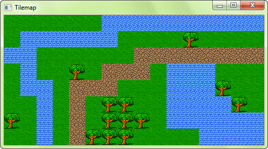

- CrSFML
- Introduction
- 1. Getting started
- 2. System module
- 3. Window module
- 4. Graphics module
- 5. Audio module
- 6. Network module
- Published with GitBook
Designing your own entities with vertex arrays
Introduction
SFML provides simple classes for the most common 2D entities. And while more complex entities can easily be created from these building blocks, it isn't always the most efficient solution. For example, you'll reach the limits of your graphics card very quickly if you draw a large number of sprites. The reason is that performance depends in large part on the number of calls to the draw function. Indeed, each call involves setting a set of OpenGL states, resetting matrices, changing textures, etc. All of this is required even when simply drawing two triangles (a sprite). This is far from optimal for your graphics card: Today's GPUs are designed to process large batches of triangles, typically several thousand to millions.
To fill this gap, SFML provides a lower-level mechanism to draw things: Vertex arrays. As a matter of fact, vertex arrays are used internally by all other SFML classes. They allow for a more flexible definition of 2D entities, containing as many triangles as you need. They even allow drawing points or lines.
What is a vertex, and why are they always in arrays?
A vertex is the smallest graphical entity that you can manipulate. In short, it is a graphical point: Naturally, it has a 2D position (x, y), but also a color, and a pair of texture coordinates. We'll go into the roles of these attributes later.
Vertices (plural of vertex) alone don't do much. They are always grouped into primitives: Points (1 vertex), lines (2 vertices), triangles (3 vertices) or quads (4 vertices). You can then combine multiple primitives together to create the final geometry of the entity.
Now you understand why we always talk about vertex arrays, and not vertices alone.
A simple vertex array
Let's have a look at the Vertex class now. It's simply a container which contains three public members and no functions besides its constructors. These constructors allow you to construct vertices from the set of attributes you care about -- you don't always need to color or texture your entity.
// create a new vertex
sf::Vertex vertex;
// set its position
vertex.position = sf::Vector2f(10, 50);
// set its color
vertex.color = sf::Color::Red;
// set its texture coordinates
vertex.texCoords = sf::Vector2f(100, 100);
... or, using the correct constructor:
sf::Vertex vertex(sf::Vector2f(10, 50), sf::Color::Red, sf::Vector2f(100, 100));
Now, let's define a primitive. Remember, a primitive consists of several vertices, therefore we need a vertex array. SFML provides a simple wrapper for this: VertexArray. It provides the semantics of an array (similar to std::vector), and also stores the type of primitive its vertices define.
// create an array of 3 vertices that define a triangle primitive
sf::VertexArray triangle(sf::Triangles, 3);
// define the position of the triangle's points
triangle[0].position = sf::Vector2f(10, 10);
triangle[1].position = sf::Vector2f(100, 10);
triangle[2].position = sf::Vector2f(100, 100);
// define the color of the triangle's points
triangle[0].color = sf::Color::Red;
triangle[1].color = sf::Color::Blue;
triangle[2].color = sf::Color::Green;
// no texture coordinates here, we'll see that later
Your triangle is ready and you can now draw it. Drawing a vertex array can be done similar to drawing any other SFML entity, by using the draw function:
window.draw(triangle);

You can see that the vertices' color is interpolated to fill the primitive. This is a nice way of creating gradients.
Note that you don't have to use the VertexArray class. It's just defined for convenience, it's nothing more than a std::vector<sf::Vertex> along with a sf::PrimitiveType. If you need more flexibility, or a static array, you can use your own storage. You must then use the overload of the draw function which takes a pointer to the vertices, the vertex count and the primitive type.
std::vector<sf::Vertex> vertices;
vertices.push_back(sf::Vertex(...));
...
window.draw(&vertices[0], vertices.size(), sf::Triangles);
sf::Vertex vertices[2] =
{
sf::Vertex(...),
sf::Vertex(...)
};
window.draw(vertices, 2, sf::Lines);
Primitive types
Let's pause for a while and see what kind of primitives you can create. As explained above, you can define the most basic 2D primitives: Point, line, triangle and quad (quad exists merely as a convenience, internally the graphics card breaks it into two triangles). There are also "chained" variants of these primitive types which allow for sharing of vertices among two consecutive primitives. This can be useful because consecutive primitives are often connected in some way.
Let's have a look at the full list:
| Primitive type | Description | Example |
|---|---|---|
sf::Points |
A set of unconnected points. These points have no thickness: They will always occupy a single pixel, regardless of the current transform and view. |  |
sf::Lines |
A set of unconnected lines. These lines have no thickness: They will always be one pixel wide, regardless of the current transform and view. |  |
sf::LinesStrip |
A set of connected lines. The end vertex of one line is used as the start vertex of the next one. |  |
sf::Triangles |
A set of unconnected triangles. |  |
sf::TrianglesStrip |
A set of connected triangles. Each triangle shares its two last vertices with the next one. |  |
sf::TrianglesFan |
A set of triangles connected to a central point. The first vertex is the center, then each new vertex defines a new triangle, using the center and the previous vertex. |  |
sf::Quads |
A set of unconnected quads. The 4 points of each quad must be defined consistently, either in clockwise or counter-clockwise order. |  |
Texturing
Like other SFML entities, vertex arrays can also be textured. To do so, you'll need to manipulate the texCoords attribute of the vertices. This attribute defines which pixel of the texture is mapped to the vertex.
// create a quad
sf::VertexArray quad(sf::Quads, 4);
// define it as a rectangle, located at (10, 10) and with size 100x100
quad[0].position = sf::Vector2f(10, 10);
quad[1].position = sf::Vector2f(110, 10);
quad[2].position = sf::Vector2f(110, 110);
quad[3].position = sf::Vector2f(10, 110);
// define its texture area to be a 25x50 rectangle starting at (0, 0)
quad[0].texCoords = sf::Vector2f(0, 0);
quad[1].texCoords = sf::Vector2f(25, 0);
quad[2].texCoords = sf::Vector2f(25, 50);
quad[3].texCoords = sf::Vector2f(0, 50);
Texture coordinates are defined in pixels (just like the textureRect of sprites and shapes). They are not normalized (between 0 and 1), as people who are used to OpenGL programming might expect.
Vertex arrays are low-level entities, they only deal with geometry and do not store additional attributes like a texture. To draw a vertex array with a texture, you must pass it directly to the draw function:
sf::VertexArray vertices;
sf::Texture texture;
...
window.draw(vertices, &texture);
This is the short version, if you need to pass other render states (like a blend mode or a transform), you can use the explicit version which takes a RenderStates object:
sf::VertexArray vertices;
sf::Texture texture;
...
sf::RenderStates states;
states.texture = &texture;
window.draw(vertices, states);
Transforming a vertex array
Transforming is similar to texturing. The transform is not stored in the vertex array, you must pass it to the draw function.
sf::VertexArray vertices;
sf::Transform transform;
...
window.draw(vertices, transform);
Or, if you need to pass other render states:
sf::VertexArray vertices;
sf::Transform transform;
...
sf::RenderStates states;
states.transform = transform;
window.draw(vertices, states);
To know more about transformations and the Transform class, you can read the tutorial on transforming entities.
Creating an SFML-like entity
Now that you know how to define your own textured/colored/transformed entity, wouldn't it be nice to wrap it in an SFML-style class? Fortunately, SFML makes this easy for you by providing the Drawable and Transformable base classes. These two classes are the base of the built-in SFML entities Sprite, Text and Shape.
Drawable is an interface: It declares a single pure virtual function and has no members nor concrete functions. Inheriting from Drawable allows you to draw instances of your class the same way as SFML classes:
class MyEntity : public sf::Drawable
{
private:
virtual void draw(sf::RenderTarget& target, sf::RenderStates states) const;
};
MyEntity entity;
window.draw(entity); // internally calls entity.draw
Note that doing this is not mandatory, you could also just have a similar draw function in your class and simply call it with entity.draw(window). But the other way, with Drawable as a base class, is nicer and more consistent. This also means that if you plan on storing an array of drawable objects, you can do it without any additional effort since all drawable objects (SFML's and yours) derive from the same class.
The other base class, Transformable, has no virtual function. Inheriting from it automatically adds the same transformation functions to your class as other SFML classes (setPosition, setRotation, move, scale, ...). You can learn more about this class in the tutorial on transforming entities.
Using these two base classes and a vertex array (in this example we'll also add a texture), here is what a typical SFML-like graphical class would look like:
class MyEntity : public sf::Drawable, public sf::Transformable
{
public:
// add functions to play with the entity's geometry / colors / texturing...
private:
virtual void draw(sf::RenderTarget& target, sf::RenderStates states) const
{
// apply the entity's transform -- combine it with the one that was passed by the caller
states.transform *= getTransform(); // getTransform() is defined by sf::Transformable
// apply the texture
states.texture = &m_texture;
// you may also override states.shader or states.blendMode if you want
// draw the vertex array
target.draw(m_vertices, states);
}
sf::VertexArray m_vertices;
sf::Texture m_texture;
};
You can then use this class as if it were a built-in SFML class:
MyEntity entity;
// you can transform it
entity.setPosition(10, 50);
entity.setRotation(45);
// you can draw it
window.draw(entity);
Example: tile map
With what we've seen above, let's create a class that encapsulates a tile map. The whole map will be contained in a single vertex array, therefore it will be super fast to draw. Note that we can apply this strategy only if the whole tile set can fit into a single texture. Otherwise, we would have to use at least one vertex array per texture.
class TileMap : public sf::Drawable, public sf::Transformable
{
public:
bool load(const std::string& tileset, sf::Vector2u tileSize, const int* tiles, unsigned int width, unsigned int height)
{
// load the tileset texture
if (!m_tileset.loadFromFile(tileset))
return false;
// resize the vertex array to fit the level size
m_vertices.setPrimitiveType(sf::Quads);
m_vertices.resize(width * height * 4);
// populate the vertex array, with one quad per tile
for (unsigned int i = 0; i < width; ++i)
for (unsigned int j = 0; j < height; ++j)
{
// get the current tile number
int tileNumber = tiles[i + j * width];
// find its position in the tileset texture
int tu = tileNumber % (m_tileset.getSize().x / tileSize.x);
int tv = tileNumber / (m_tileset.getSize().x / tileSize.x);
// get a pointer to the current tile's quad
sf::Vertex* quad = &m_vertices[(i + j * width) * 4];
// define its 4 corners
quad[0].position = sf::Vector2f(i * tileSize.x, j * tileSize.y);
quad[1].position = sf::Vector2f((i + 1) * tileSize.x, j * tileSize.y);
quad[2].position = sf::Vector2f((i + 1) * tileSize.x, (j + 1) * tileSize.y);
quad[3].position = sf::Vector2f(i * tileSize.x, (j + 1) * tileSize.y);
// define its 4 texture coordinates
quad[0].texCoords = sf::Vector2f(tu * tileSize.x, tv * tileSize.y);
quad[1].texCoords = sf::Vector2f((tu + 1) * tileSize.x, tv * tileSize.y);
quad[2].texCoords = sf::Vector2f((tu + 1) * tileSize.x, (tv + 1) * tileSize.y);
quad[3].texCoords = sf::Vector2f(tu * tileSize.x, (tv + 1) * tileSize.y);
}
return true;
}
private:
virtual void draw(sf::RenderTarget& target, sf::RenderStates states) const
{
// apply the transform
states.transform *= getTransform();
// apply the tileset texture
states.texture = &m_tileset;
// draw the vertex array
target.draw(m_vertices, states);
}
sf::VertexArray m_vertices;
sf::Texture m_tileset;
};
And now, the application that uses it:
int main()
{
// create the window
sf::RenderWindow window(sf::VideoMode(512, 256), "Tilemap");
// define the level with an array of tile indices
const int level[] =
{
0, 0, 0, 0, 0, 0, 1, 1, 1, 1, 1, 1, 1, 1, 1, 1,
0, 1, 1, 1, 1, 1, 1, 0, 0, 0, 0, 2, 0, 0, 0, 0,
1, 1, 0, 0, 0, 0, 0, 0, 3, 3, 3, 3, 3, 3, 3, 3,
0, 1, 0, 0, 2, 0, 3, 3, 3, 0, 1, 1, 1, 0, 0, 0,
0, 1, 1, 0, 3, 3, 3, 0, 0, 0, 1, 1, 1, 2, 0, 0,
0, 0, 1, 0, 3, 0, 2, 2, 0, 0, 1, 1, 1, 1, 2, 0,
2, 0, 1, 0, 3, 0, 2, 2, 2, 0, 1, 1, 1, 1, 1, 1,
0, 0, 1, 0, 3, 2, 2, 2, 0, 0, 0, 0, 1, 1, 1, 1,
};
// create the tilemap from the level definition
TileMap map;
if (!map.load("tileset.png", sf::Vector2u(32, 32), level, 16, 8))
return -1;
// run the main loop
while (window.isOpen())
{
// handle events
sf::Event event;
while (window.pollEvent(event))
{
if(event.type == sf::Event::Closed)
window.close();
}
// draw the map
window.clear();
window.draw(map);
window.display();
}
return 0;
}

Example: particle system
This second example implements another common entity: The particle system. This one is very simple, with no texture and as few parameters as possible. It demonstrates the use of the sf::Points primitive type with a dynamic vertex array which changes every frame.
class ParticleSystem : public sf::Drawable, public sf::Transformable
{
public:
ParticleSystem(unsigned int count) :
m_particles(count),
m_vertices(sf::Points, count),
m_lifetime(sf::seconds(3)),
m_emitter(0, 0)
{
}
void setEmitter(sf::Vector2f position)
{
m_emitter = position;
}
void update(sf::Time elapsed)
{
for (std::size_t i = 0; i < m_particles.size(); ++i)
{
// update the particle lifetime
Particle& p = m_particles[i];
p.lifetime -= elapsed;
// if the particle is dead, respawn it
if (p.lifetime <= sf::Time::Zero)
resetParticle(i);
// update the position of the corresponding vertex
m_vertices[i].position += p.velocity * elapsed.asSeconds();
// update the alpha (transparency) of the particle according to its lifetime
float ratio = p.lifetime.asSeconds() / m_lifetime.asSeconds();
m_vertices[i].color.a = static_cast<sf::Uint8>(ratio * 255);
}
}
private:
virtual void draw(sf::RenderTarget& target, sf::RenderStates states) const
{
// apply the transform
states.transform *= getTransform();
// our particles don't use a texture
states.texture = NULL;
// draw the vertex array
target.draw(m_vertices, states);
}
private:
struct Particle
{
sf::Vector2f velocity;
sf::Time lifetime;
};
void resetParticle(std::size_t index)
{
// give a random velocity and lifetime to the particle
float angle = (std::rand() % 360) * 3.14f / 180.f;
float speed = (std::rand() % 50) + 50.f;
m_particles[index].velocity = sf::Vector2f(std::cos(angle) * speed, std::sin(angle) * speed);
m_particles[index].lifetime = sf::milliseconds((std::rand() % 2000) + 1000);
// reset the position of the corresponding vertex
m_vertices[index].position = m_emitter;
}
std::vector<Particle> m_particles;
sf::VertexArray m_vertices;
sf::Time m_lifetime;
sf::Vector2f m_emitter;
};
And a little demo that uses it:
int main()
{
// create the window
sf::RenderWindow window(sf::VideoMode(512, 256), "Particles");
// create the particle system
ParticleSystem particles(1000);
// create a clock to track the elapsed time
sf::Clock clock;
// run the main loop
while (window.isOpen())
{
// handle events
sf::Event event;
while (window.pollEvent(event))
{
if(event.type == sf::Event::Closed)
window.close();
}
// make the particle system emitter follow the mouse
sf::Vector2i mouse = sf::Mouse::getPosition(window);
particles.setEmitter(window.mapPixelToCoords(mouse));
// update it
sf::Time elapsed = clock.restart();
particles.update(elapsed);
// draw it
window.clear();
window.draw(particles);
window.display();
}
return 0;
}